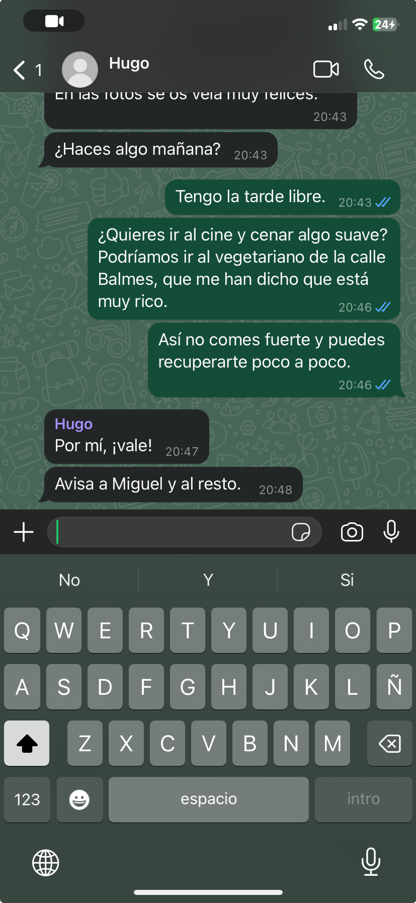
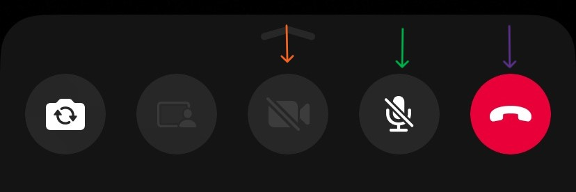

Comunícate con tus amigos y familiares de forma rápida y segura.
¡Bienvenido/a al tutorial de como utilizar Whatsapp!
Paso 1: Abrir Whatsapp
Prueba 1: Abrir Whatsapp
¿Qué debes hacer para abrir Whatsapp?
¡Correcto!
Esto solo ha sido para calentar motores. Ahora vamos a lo importante.
Paso 2: Como funciona la Interfaz de Contactos
Chats:

Si el contacto no tiene foto de perfil, te aparecerá con un icono predefinido:

{{ preguntas[currentPreguntasIndex].titulo }}
{{ preguntas[currentPreguntasIndex].descripcion }}
{{ preguntas[2].descripcion }}
{{ preguntas[3].descripcion }}
¡Bien hecho!
Sigamos con el tutorial.
Paso 3: Cómo escribir un mensaje
Ahora que sabemos cómo funciona la interfaz de contactos, vamos a ver cómo escribir un mensaje.
1. Selecciona un contacto:
Para escribir un mensaje, primero debes seleccionar un contacto, de todos los que tienes guardados en tu teléfono.
Nosotros vamos a seleccionar a "Hugo", como se muestra en la imagen de a continuación:
2. Escribe tu mensaje:
Una vez seleccionado el contacto, nos encontraremos con el chat de la persona seleccionada.
Al principio, el chat estará vacío. Cuando escribas un mensaje, se verá como en la imagen de a continuación:
Como puedes observar, hay una conversación con Hugo. Si nos fijamos en la imagen que mostramos a continuación, vemos como la flecha amarilla
indica el nombre del contacto con quien estamos hablando. La flecha morada señala al mensaje que has enviado. Como se puede observar, el mensaje esta
recubierto por un globo de color verde, que es el color que se le asigna a los mensajes enviados por ti.
Por otra parte, la flecha roja señala el mensaje que ha enviado Hugo. Como puedes ver, el mensaje esta recubierto por un globo de otro color diferente al verde, que es el color que se le asigna a los mensajes enviados por la otra persona.
Entonces, para diferenciar los mensajes enviados por ti y los mensajes enviados por la otra persona, se asignan colores diferentes a los globos de los mensajes. No solo eso, también se pueden diferenciar por la posición en la que estan.
Los mensajes de la persona con la que estás hablando, estarán a la izquierda de la pantalla, mientras que los mensajes que has enviado estarán a la derecha de la pantalla.
Dentro de los globos de los mensajes, se puede ver el texto que se ha escrito. Abajo a la derecha del globo, se puede ver la hora en la que se ha enviado el mensaje.
Y al lado de la hora, unos ticks ✔✔. Que representan lo siguiente:
- 1 tick: El mensaje ha sido enviado pero no ha sido recibido.
- 2 ticks: El mensaje ha sido enviado y recibido.
- 2 ticks azules: El mensaje ha sido enviado, recibido y leído.
3. Enviar mensaje:

{{ preguntas[currentPreguntasIndex].titulo }}
{{ preguntas[4].descripcion }}
{{ preguntas[5].descripcion }}
{{ preguntas[6].descripcion }}
{{ preguntas[7].descripcion }}
Paso 4: Cómo hacer una llamada y videollamada
1. Hacer una llamada:
Para hacer una llamada, primero debes seleccionar un contacto, de todos los que tienes guardados en tu teléfono. Una vez seleccionado el contacto, nos encontraremos con el chat de la persona seleccionada. Si nos fijamos en la parte superior derecha de la pantalla, veremos un iconos de llamadas, como se muestra en la imagen de a continuación:
Las dos flechas naranjas indican los iconos para hacer las llamadas. El icono de la izquierda representa la videollamada y el icono de la derecha representa la llamada de voz. La videollamada es una llamada en la que puedes ver a la persona con la que estás hablando. La llamada de voz es una llamada en la que solo puedes escuchar a la persona con la que estás hablando.
Una vez hayas presionado a unos de los botones, la interfaz de la llamada será como la de la imagen de a continuación:
Como se puede observar, en la interfaz de la llamada aparece la foto de perfil de la persona con la que estás hablando, el nombre de la persona con la que estás hablando, el tiempo que llevas hablando y el número de la persona con la que estás hablando. Además, en la parte inferior de la pantalla, verás unos botones que te permiten silenciar el micrófono, colgar la llamada y activar o desactivar la cámara.
En la siguiente imagen puedes ver el botón de silenciar el micrófono, que le señala la flecha naranja, te permite que la otra persona no te escuche. El botón de colgar la llamada, que se representa como un boton rojo y señalado por la flecha morada, te permite finalizar la llamada. Por último, el botón de activar o desactivar la cámara te permite que la otra persona te vea o no, representado por la flecha verde.
 Ya que hemos entendido como hacer una videollamada y una llamada de voz, vamos a ponernos a prueba.
{{ preguntas[8].titulo }}
{{ preguntas[8].descripcion }}
{{ preguntas[9].descripcion }}
{{ preguntas[10].descripcion }}
¡Felicidades!
Has acabado todo el tutorial. ¡Esperamos que te haya gustado!